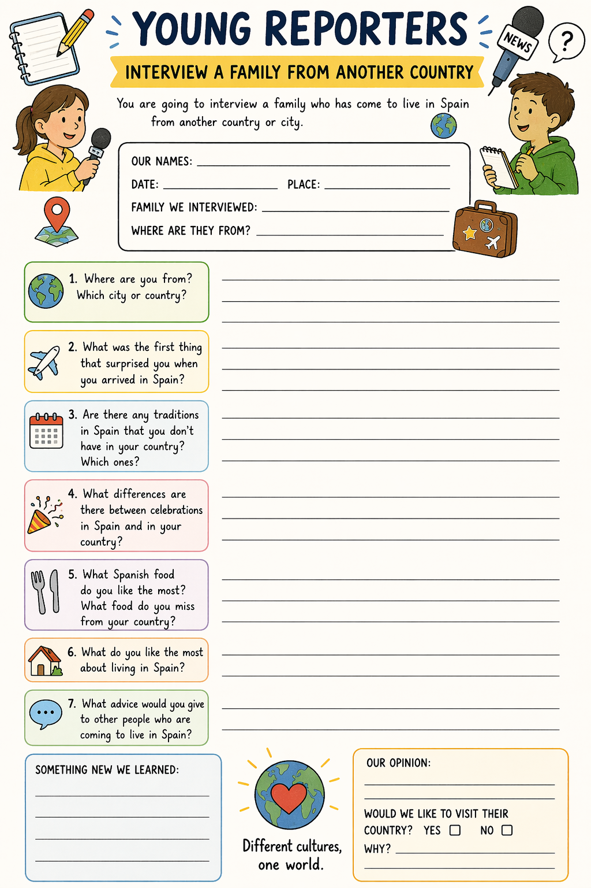
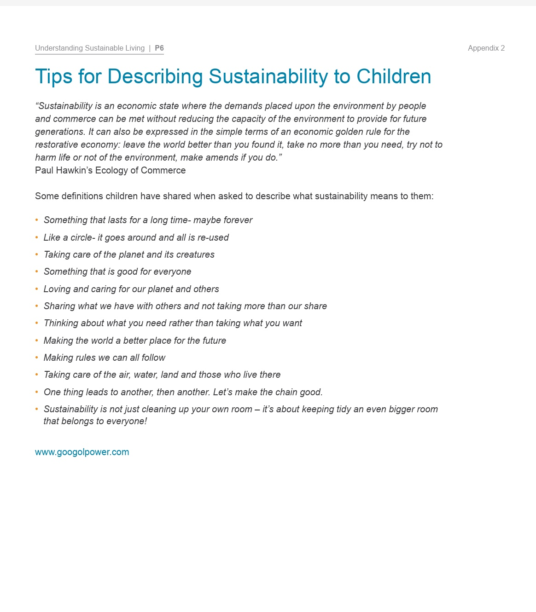
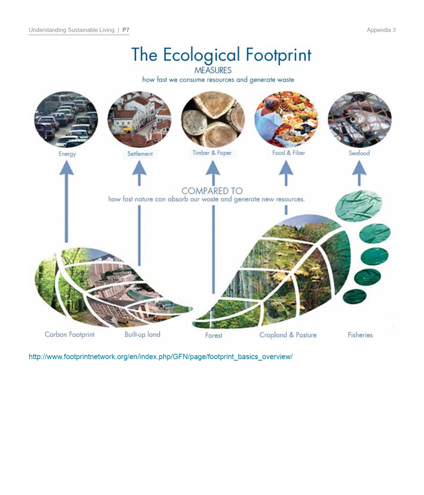

Temporalización
La sesión nº6 se realizará el martes 6 de mayo.
La sesión nº6 se realizará el martes 6 de mayo.
ACTIVIDAD 1.
Agrupamiento: individual
Realizarán un cuestionario a través de Kahoot!
ACTIVIDAD 2.
En pequeños grupos, elaboran una breve entrevista para la siguiente sesión.



Para ayudar a nuestro alumnado a preparar las preguntas, les daremos antes unas pautas para que les sea más sencillo hacerlas:
Contextualizar el tema: Explica a los estudiantes que las preguntas deben enfocarse en la experiencia de la persona migrante, su cultura, su país de origen y cómo se ha adaptado a su nuevo entorno. Esto ayudará a los estudiantes a comprender qué tipo de información pueden obtener.
Enfoque en la empatía: Fomenta que las preguntas sean respetuosas y que demuestren interés en la historia de la persona, sin ser intrusivas.
Organiza las preguntas en categorías para que los estudiantes puedan pensar en diferentes áreas de la experiencia migratoria. Algunas categorías pueden ser:
- Sobre su país de origen:
"What is your country known for?"
"What is your favorite food from your country?"
"How is the weather in your country?"
- Sobre la migración:
"Why did you move to this country?"
"How did you feel when you arrived?"
"What was the hardest part of moving here?"
-Sobre las diferencias culturales:
"What is the biggest difference between your country and here?"
"What do you miss most about your country?"
"Are there any traditions from your country that you still follow?"
-Sobre la adaptación al nuevo país:
"How did you learn the language?"
"What has been your favorite part of living here?"
"Have you made new friends here?"
Las preguntas abiertas permiten obtener respuestas más detalladas, pero deben ser concisas y fáciles de entender. Enséñales a formular preguntas como:
"What was the best part of your experience?"
"How has your life changed since moving here?"
Práctica en parejas: Organiza una actividad donde los estudiantes se entrevisten entre ellos, practicando las preguntas en inglés. Pueden intercambiar roles, donde uno es la persona migrante y el otro el entrevistador.
Revisión de las preguntas: A medida que practican, ayúdales a mejorar la claridad y precisión de las preguntas. Anima a los estudiantes a hacer preguntas más específicas.
Proporciona una lista con preguntas modelo que los estudiantes pueden usar como guía. Algunas preguntas pueden ser:
"What is the most important holiday in your country?"
"What do you like about your culture?"
"How do you celebrate special events in your country?"
"Do you feel different living here?"
"What advice would you give to someone moving to this country?"
Asegúrate de que las preguntas sean concretas y fáciles de responder. Ejemplos de preguntas cortas son:
"How old were you when you moved?"
"What is your favorite food from home?"
"What is the weather like in your country?"
"Did you find it easy to learn the language?"
"What is the most beautiful place in your country?"
Revisar juntos: Antes de la charla, revisa las preguntas con los estudiantes para asegurarte de que son apropiadas, claras y fáciles de entender. Esto les ayudará a sentirse más preparados.
Ensayo final: Realiza un ensayo final con los estudiantes, donde puedan practicar haciendo preguntas en voz alta, ajustando el tono y la pronunciación.
Pregunta 1: "Why did you leave your country?"
Pregunta 2: "How long have you been living here?"
Pregunta 3: "What do you miss most about your home?"
Pregunta 4: "What was the hardest part of moving?"
Pregunta 5: "Do you celebrate any holidays from your country here?"
Obra publicada con Licencia Creative Commons Reconocimiento Compartir igual 4.0